GNOME and Red Hat Linux Eleven Years Ago
Four years ago, I switched on an old PC and found a seven year old (at that time) copy of Linux on it. I still use parts of the 1998 Red Hat Linux, today.
Red Hat Linux in 1998
My copy of Red Hat Linux is 5.1, codenamed "Manhattan". It was released on May 22, 1998. The first Red Hat Linux 1.0 was released on November 3, 1994. Finally, Red Hat Linux merged with Fedora on 22 September 2003, when Red Hat started Red Hat Enterprise Linux. I bought an official boxed set with a manual in the autumn of 1998, for £29.95 (British Pounds), from a mail-order catalogue. The catalogue also listed Slackware 3.5, Debian 1.3, TurboLinux 2.0, Caldera 1.2, FreeBSD 2.2.7, and BSD Lite 4.4. Before then, I had been using Coherent, a Unix Version 7 clone, originally produced for the PDP-11 in 1980 and ported to the IBM PC in 1983.
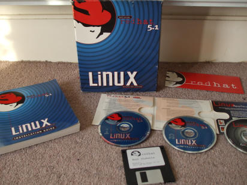The kernel is 2.0.34. It does not support thread-local storage, so I get an error when I run a program built with a recent compiler.
Red Hat Linux 5.1 includes a "Linux Applications CD", a collection of third-party programs. It has versions of WordPerfect[1], Tripwire, and several relational databases.
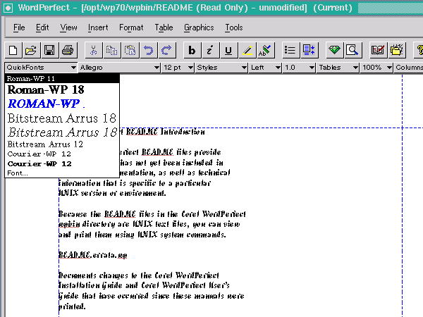Free software in 1998
Netscape released the source code of its browser and Communicator suite on March 31, 1998.
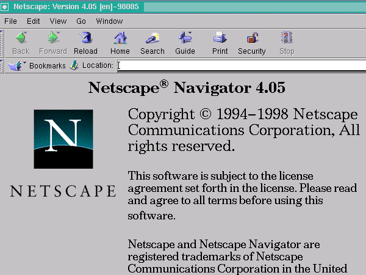The GNU C Library, glibc, for my Red Hat 5.1 is version 2.0.7. Red Hat Linux 4.2, released in May 1997, was the last Red Hat Linux based on the Linux libc "libc 5". The Linux kernel developers had forked glibc in the early 1990's. Their last version was called libc.so.5. According to Wikipedia, "when FSF released glibc 2.0 in 1996, it had a much more complete POSIX standards support, better internationalisation/multilingual support, support for IPv6, 64-bit data access, support for multithreaded applications, future versions compatibility support, and the code was more portable. At this point, the Linux kernel developers discontinued their fork and returned to using FSF's glibc." The new glibc 2.x series was given the internal name "libc.so.6".
It was the time of the EGCS fork of the GNU C compiler. EGCS stood for "Experimental/Enhanced GNU Compiler System". My Red Hat 5.1 includes an early version, 1.0.2, released on March 18, 1998. But the default compiler is gcc for stability. GCC development followed a "cathedral" model and had become quite conservative. In 1997, a group of developers, some from Cygnus, formed EGCS to merge several forks, including g77 (Fortran), Pentium optimizations and many C++ improvements. According to Wikipedia, "EGCS development proved considerably more vigorous than GCC development, so much so that the FSF officially halted development on their GCC 2.x compiler, 'blessed' EGCS as the official version of GCC and appointed the EGCS project as the GCC maintainers in April 1999." It was at that time that GCC was renamed the "GNU Compiler Collection".
Red Hat 5.1 came with a 2.0.1 version of PHP/FI. Developer Rasmus Lerdorf warned that it is "quickly going to be superseded by Version 3.0", citing "dramatic improvements". PHP3 was released on June 19 1998. Wikipedia says, "Zeev Suraski and Andi Gutmans, two Israeli developers at the Technion IIT, rewrote the parser in 1997 and formed the basis of PHP 3, changing the language's name to the recursive initialism PHP: Hypertext Preprocessor[2] ... Suraski and Gutmans then started a new rewrite of PHP's core, producing the Zend Engine in 1999. They also founded Zend Technologies in Ramat Gan, Israel."
KDE 1.0 was released on 12 July 1998. KDE was founded in 1996. In November 1998, Qt became open source, dual-licensed under the open QPL and a commercial license for proprietary development.
1998 GNOME beta
Red Hat 5.1 includes a preview of the GNOME desktop environment, a beta release. The release notes say, "It is the results of about 4 months of feverish work by an Internet-based development team." GNOME development was announced in August 1997. The first major GNOME release, version 1.0, was to be in March 1999.

The GNOME distribution's README file says: "It is indisputable that Linux is a rock-solid server OS, but traditionally Linux has not catered as much to the typical desktop user, who wants to write email, browse the web, etc. The GNOME project aims to provide a desktop environment that will be friendly to novice users, but at the same time provide the power and flexibility that advanced users expect."
GNOME did not come with a window manager. You could just run the GNOME panel from your .xinitrc file, as in:
panel & background-properties --init & keyboard-properties --init & mouse-properties --init & fvwm2 -f .fvwm2rc.gnome # disable fvwm2 taskbar
The background, keyboard, and mouse properties programs restore your previous settings for the background image, mouse sensitivity, and so on.
The file manager is a GNOME version of GNU Midnight Commander, a clone of Norton Commander. Midnight Commander has a text user interface and is still developed today.
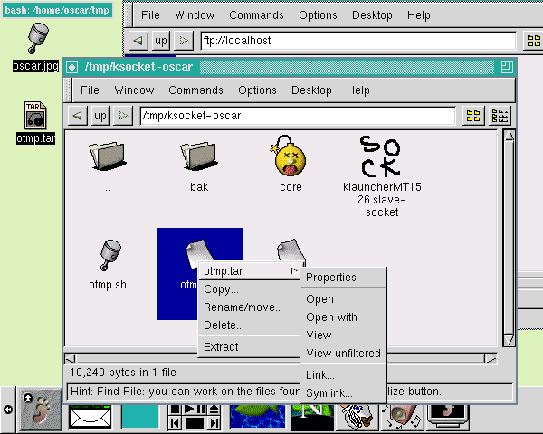The image viewer is Electric Eyes, developed by "The Rasterman", Carsten Haiztler, at Red Hat Advanced Development Labs. He worked on the Enlightenment desktop. It was one of the first applications to use Imlib, an X-based imaging toolkit. You can crop images, do simple color table tweaking, and resize or rotate images. It was superseded by Eye of Gnome and GQView, neither of which had any image manipulation features. The last release of Electric Eyes seems to be 0.3.12 in July 2000.[3] It last appeared in Red Hat Linux 7.3, released in May 2002. It still appeared in Mandriva till 2007.
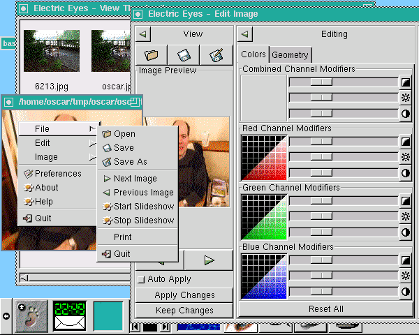The release notes have a section on "GNOME Tricks", "a preview of the awesome abilities DnD will bring to your desktop". You can drag an image from GNOME Midnight Commander or Electric Eyes, onto the panel or the background-properties dialog, to set their respective backgrounds. You can also drag an image from GNOME Midnight Commander onto Electric Eyes. You can print a file by dragging it from Midnight Commander onto the print applet in the panel.
The GIMP is on the GNOME "graphics" menu alongside Electric Eyes. It is version 0.99.28:

The file open dialog is much simpler than today's:
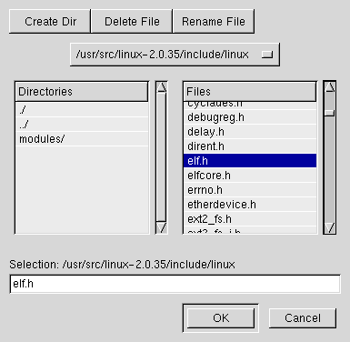A message box looks like this:
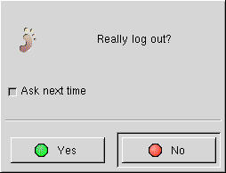GNOME terminal does not have modern features like tabs or transparency. It was written by Miguel de Icaza, and used code from the Zvt terminal widget by Michael Zucchi. Today's GNOME terminal appears to date from 2002.
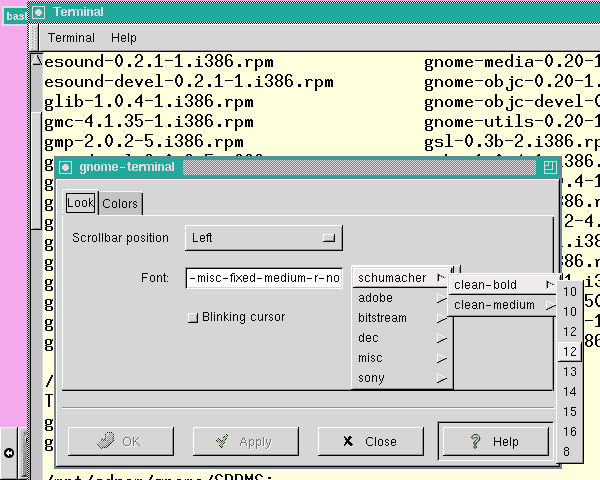In the GNOME audio menu, there is the Extace Waveform display, an audio mixer, and a CD player. On my setup, Extace says it cannot connect to esound, and I cannot get the mixer to work at all. The CD player does better:
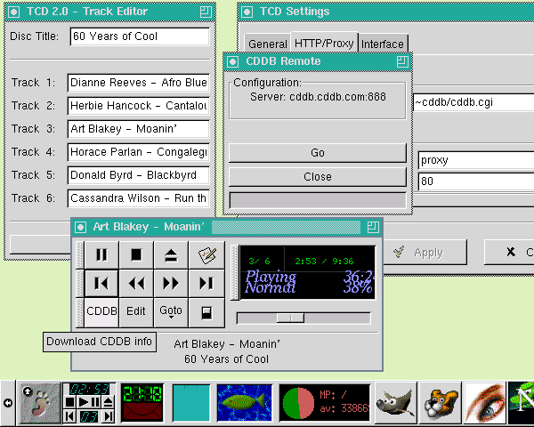The GNOME applications menu includes emacs and gEdit 0.4.0, written by Alex Roberts and Evan Lawrence. It is described as a "small and lightweight text editor for GNOME/Gtk+". You can only open, save and print files, cut and paste, and search and replace. The options to change the text font and toggle auto-indenting do not seem to work.
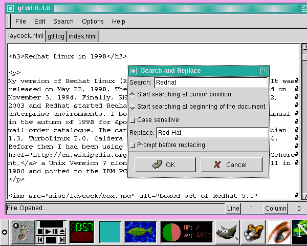The GNOME Calendar resembles the calendar app found in Microsoft Outlook at that time:
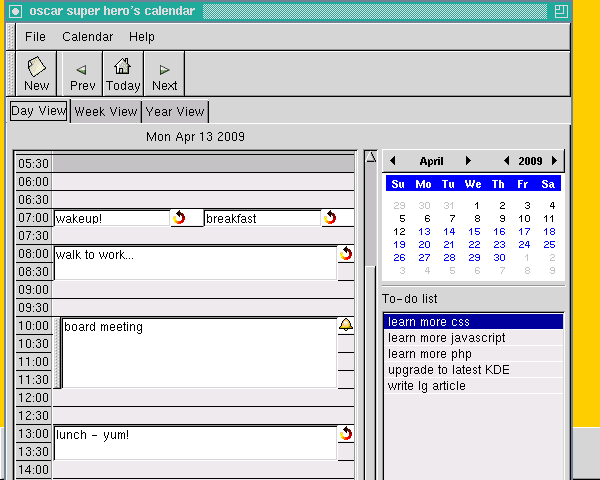
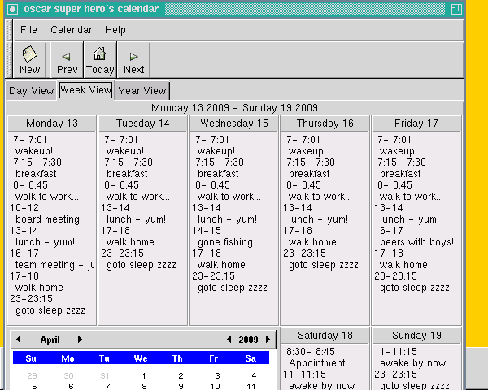
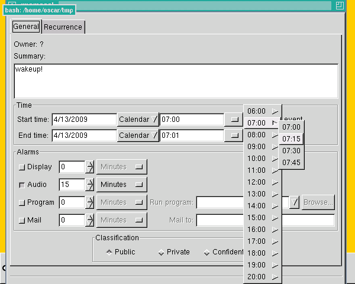
GNOME has GTimeTracker by Eckehard Berns. You select a project and start and stop a timer. You can run a shell command every time you select or deselect a project. You can create a log of all your activities.
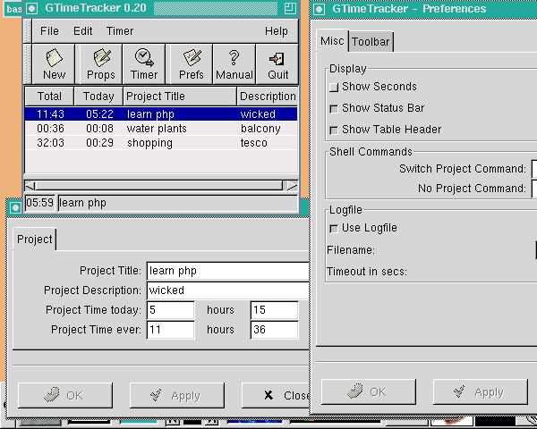GnomeCard, an address book application, and the Gnumeric spreadsheet had been added by the time of Red Hat Linux 6.0, which was released in April 1999.
The GNOME system monitor program is GTop 0.20 by Radek Doulik. In the picture below, in the background, is a coloured chart of memory usage. You can choose to see the total, shared, or resident sizes.
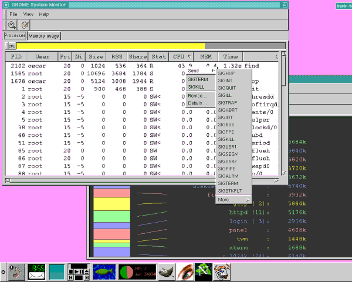The system log monitor program is Logview 0.1, by Cesar Miquel. You can choose a day on the calendar and see the relevant log entries.
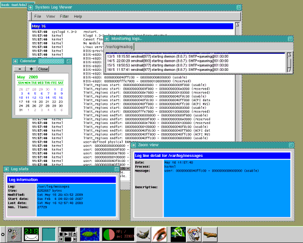The GNOME Search Tool has options to specify a last modified date range, file ownership, to use the "locate" command, to not descend into mounted filesystems and to add extra "find" options. It looks like you can search for specific content or apply a command. Unfortunately, none of these options works.
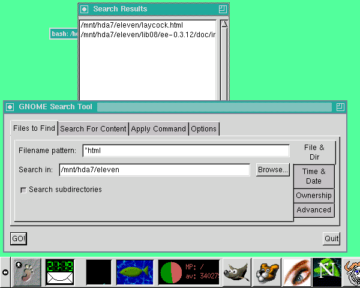The GNOME Help Browser says it is "an interface to the various forms of documentation present on your computer, and from other computer via the Internet". It can load a GNOME help page for an application, although "not much documentation in this format exists currently". It will load HTML across the Web and present man and info pages. It will do "whatis" queries, and load local files.
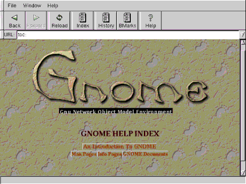 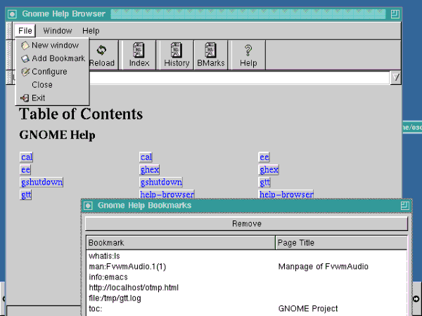The games included are a solitaire card game, minesweeper, mahjongg, and the "same game". Inspiration for the "same game" came from the KDE game.
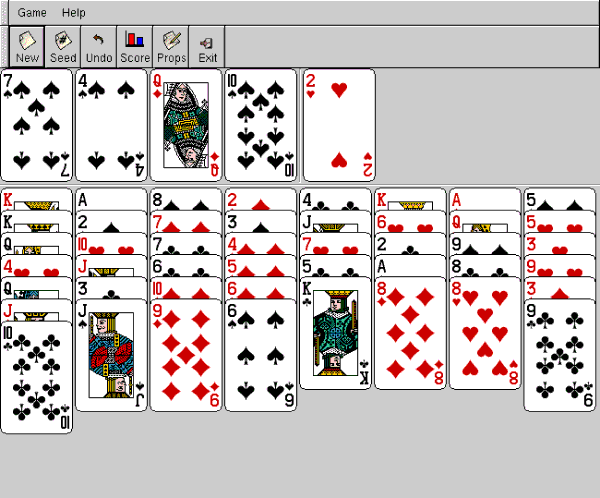 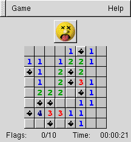 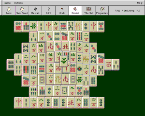 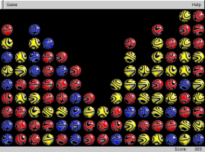GXSNMP is a basic SNMP network management application. Unfortunately, I do not have a network!
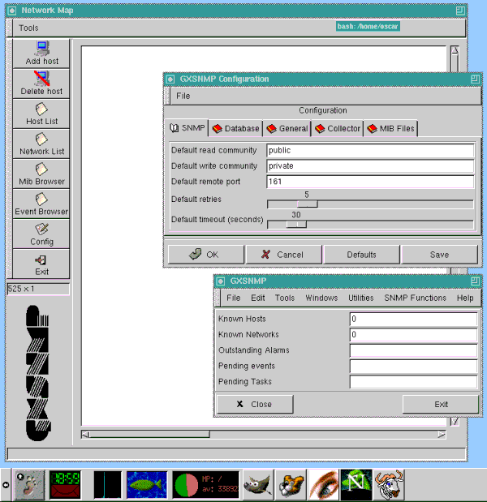On the GNOME system menu are various properties screens:
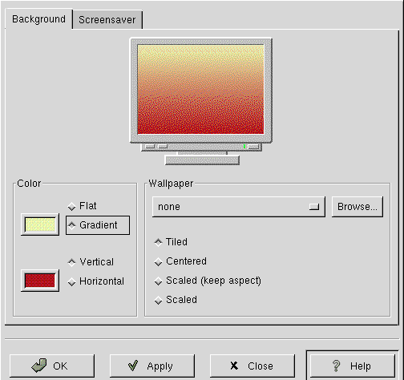 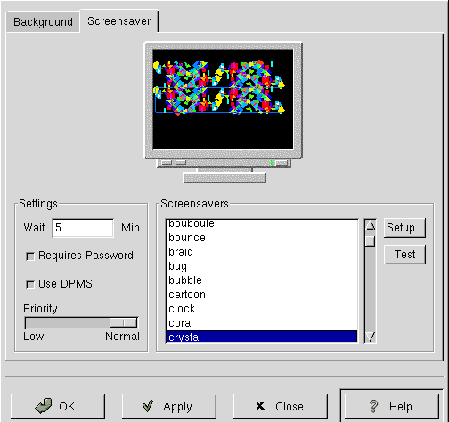 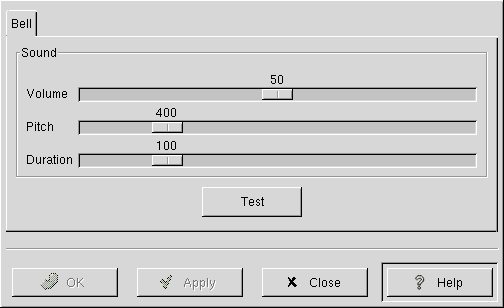 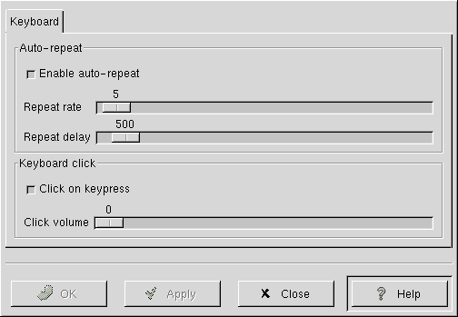 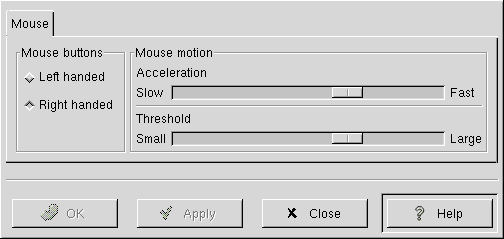 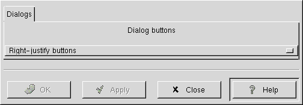There are two menu options to run a command. They lead to the "grun" program, which shows a simple dialog with an input box, which runs the typed command in my root xterm. It does not seem to do anything else.
There is also yagIRC, "Yet Another GTK+ based IRC client" and GHex, a binary file editor. The browser is Netscape Navigator.
The panel applets include Wanda the Fish, ready with a fortune cookie. There are CD player and audio mixer applets. I do not appear to have a mixer, so it is not shown.
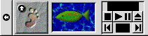There are four "monitor" applets available in the panel, showing battery usage, CPU load, disk/memory usage, and disk usage:
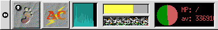The "network" applets comprise: a PPP dialer, a mailcheck, modem lights, network load monitor and a "Web control" to launch Netscape Navigator. (The network load applet says it needs IP accounting turned on in the kernel, to work.)
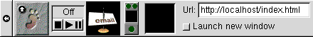There are several "utility" applets for the panel, including a clock, a clock and mailcheck together, a floppy drive mounter, and the drag-and-drop printer applet. There is also a workspace pager (not shown), which says it needs a window manager with the XA_ extensions. I am using "twm", which is probably not sufficient.
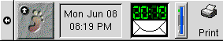Conclusion
From switching on, I can get to the 1998 GNOME desktop in two to three seconds, whereas with a recent kernel and KDE it takes thirty. I like the simplicity. The programs do most of what I want.
[1] Rick Moen comments: That would be Corel WordPerfect 8.0 Download Personal Edition, which was really an extraordinary product: a stable, fast, polished, full-featured word processor running in about 6 MB of RAM, compiled from the fabled WordPerfect Corporation portable C version that they originated on NeXTStep. It's still a credible Linux option to this day (if barely), which is amazing - although the problem of retrofitting needed support libs is onto modern Linux distributions, by now, daunting and can only get worse.
It's poignant to consider how much better Corel might be doing if they'd stuck with quality portable C code, rather than dallying first with a buggy and resource-grabbing Java rewrite, and then with yet another ground-up rewrite in C++ / Microsoft Foundation Classes, which in turn forced them to abandon all OS platforms other than Win32.
Fans of the 1990s WordPerfect for Linux 8.x series can get information including the fix for the Filtrix bug, language packs, and other useful resources via my WordPerfect for Linux FAQ.
The version of Tripwire you mention was "Tripwire Academic Source Release (ASR)", a no-charge for non-commercial usage licence. About a year later (October 2000), Tripwire, Inc. converted the product over to GPL (with a proprietary variant also available with additional features and support).
[2] Rick Moen comments: In the grand open source tradition of Slightly Dopey Initial Project Names They'd Rather We No Longer Remember, Rasmus's language and related code were originally called "Personal Home Page". (See also "Kool Desktop Environment".)
[3] Rick Moen comments: I hear that
the show-stopper with Electric Eyes was Imlib's limitations: Rendering
and scaling were primitive and memory-management faulty, and it was
missing too many needed features. Eye of GNOME was based on gdk-pixbuf, a
specific
replacement.
Talkback: Discuss this article with The Answer Gang
I live by the River Thames in the suburbs of London, England. I play with Linux in my spare time on a ten year old PC. I was a C and Oracle programmer when I was younger.